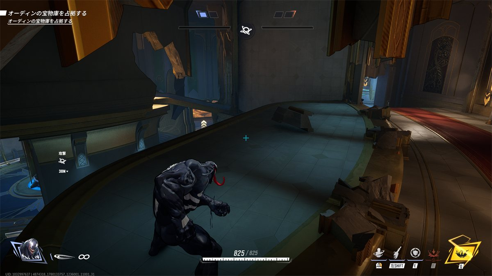
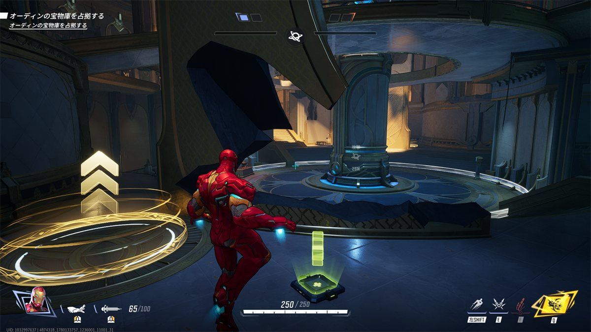
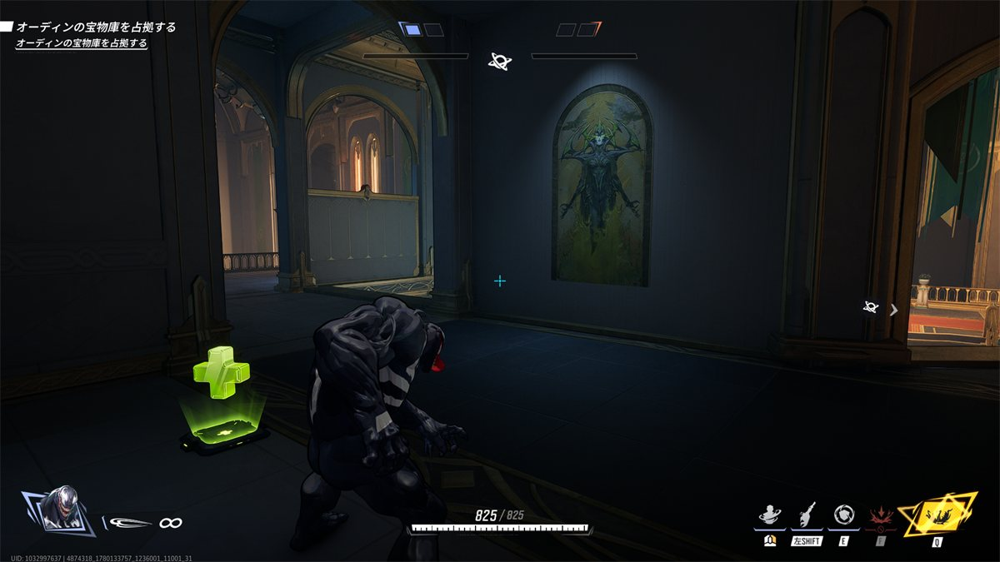
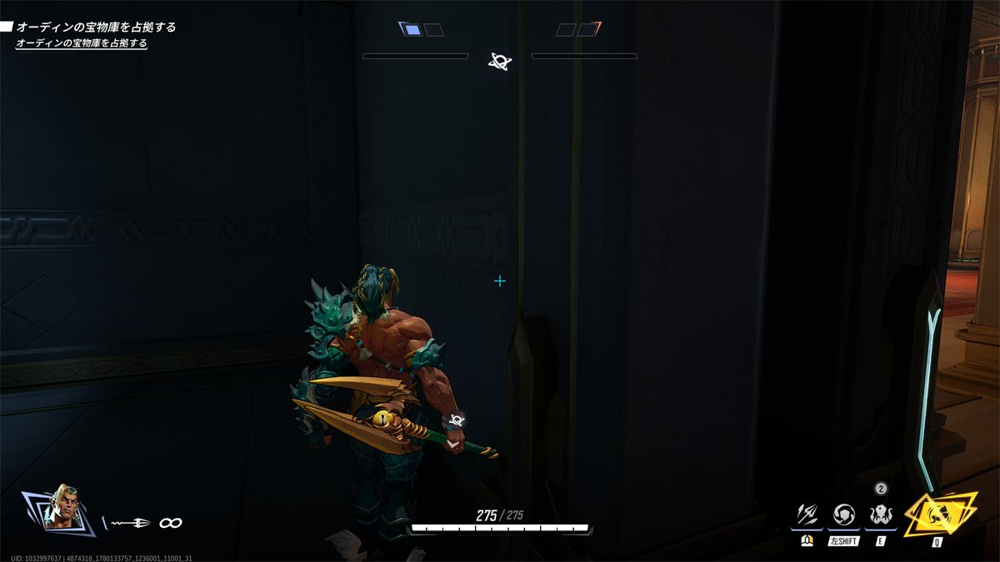
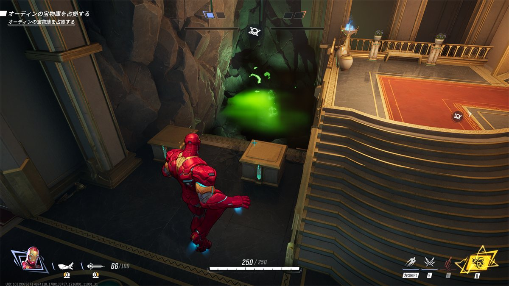

リスポーンルームから脇の細道は攻め側がしっかりしていないと非常にケアしにくくなっており、ここから逆転が安易に起きうる
吹き抜け部分の床にはエリア判定がない。
エリア部屋は吹き抜けになっていて、一見大乱闘部屋に見えるが外周部にエリアを打ち下ろせる高台が存在する。

ベタ足キャラだと外周の廊下みたいなところから壁を破壊するとエントリーできる。
純正タンク
1Fを道なりに来てジャンプ台+ヘルスパックがあるところ。
ここを障害物を破壊してヒール通るようにしつつ、エリア内の敵と相撲する。

脇出口のコーナー付近、ヘラの絵の前が強そう。

ヘルスパックあり。 エントリーする側からは待ち伏せが見えにくいつくりになってるので、ほぼ先制攻撃になる。なぜ？
※このゲームではカメラが右側の視界が広い。
ヘルスパックと同じX軸から、壁の内側にいながらも通路の視点が一部見える。
エントリーする通路側からは、ヘルスパックを視認できない。

ベーシックに裏どりアプローチ。
リス位置からほど近いところ、低い位置に奈落の毒沼が存在する。
ジェフでウルト持ったまま死んでしまい、目の前で風呂敷を広げられた時に正攻法として使ってもいいかも。
